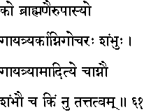
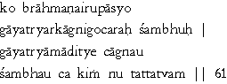

|

|
Verse 61 - Meaning:
Q:What (ko) should a wise man (braahmanair) commune with in worship (upaasyo) ?
A:With Sambhu (or the God) denoted by the Gayatri Mantra, the Sun and the Fire as symbols for communion.(gaayatry-arkaagni-gocarah-sambhuh)
Q:What is the common thread linking Gayathri, the Sun, the Fire and Sambhu ? (gaayatryaam-aaditye-ca-agnau sambhau ca kim nu)
A:Their Essence (tattvam) is the same.
|